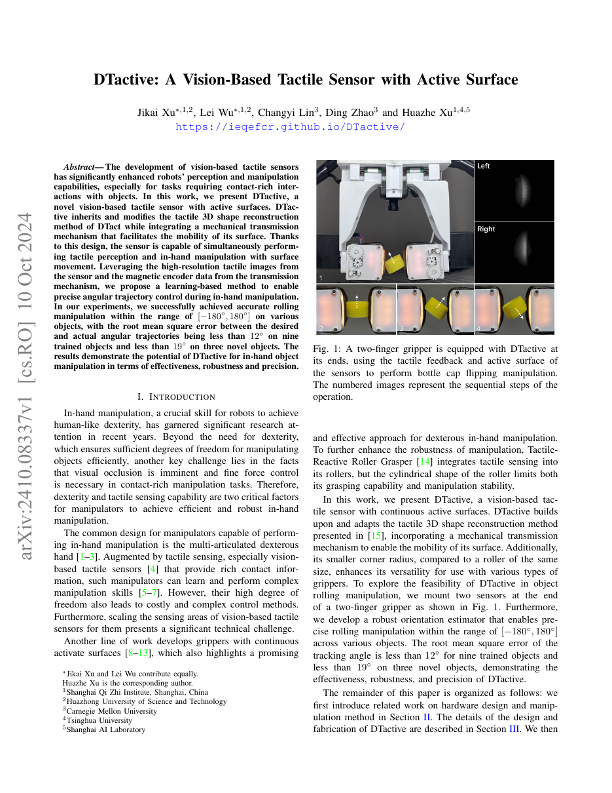

1. Paper Info
DTactive: A Vision-Based Tactile Sensor with Active Surface
| Authors | Zhiyuan Xu, Kun Lei, Zichen Lei, Huazhe Xu, et al. |
| Affiliation | Tsinghua University, Shanghai Qi Zhi Institute, IIIS |
| Year | 2025 |
| Research Type | 机器人触觉传感器 / 主动感知 / 灵巧操作 |
| Local Source | Xu et al. - 2025 - Dtactive A vision-based tactile sensor with active surface.pdf |
2. Insight & Novelty
2.1 核心问题：触觉传感器的"感知-操作"断层
核心洞察：传统触觉传感器（如 GelSight、DIGIT、DTact）的接触表面是被动静止的——它们能"感受"接触力、重建三维形状，但无法主动移动物体。而工业中能滚动物体的夹爪（如滚轮夹爪）又完全缺乏触觉反馈，只能盲操。这两类装置在机器人硬件上被设计为独立模块：感知模块负责"摸"，执行模块负责"动"，二者通过机械臂的控制回路间接耦合。DTactive 的创新是大胆的——直接在触觉传感器的弹性皮肤下嵌入主动传动机构，使同一表面既能高分辨率感知接触，又能主动驱动物体旋转/平移。这意味着"感知"和"操作"发生在同一个物理界面上，反馈延迟从机械臂级（10-100ms）降至指尖级（< 1ms）。
2.2 创新点问答（Q&A）
Q1: DTactive 与普通 GelSight 有什么本质不同？ 普通 GelSight 的弹性表面是被动变形的——物体压上去，内嵌摄像头拍下形变，通过光度立体（photometric stereo）重建三维形状。DTactive 在此基础上增加了一个机械传动层：表面不是固定的，而是可以通过电机驱动主动移动。这相当于给"皮肤"增加了"肌肉"。
Q2: 主动表面如何实现？ 核心方案是在弹性接触层与透明支撑层之间嵌入传动机构（如微型齿轮或摩擦轮）。电机通过传动机构驱动弹性皮肤表层在与物体接触的方向上运动，从而滚动或平移物体。皮肤的弹性确保运动过程中接触不丢失。
Q3: 主动运动会不会破坏触觉感知？ 这正是技术难点。主动运动会在触觉图像中产生与物体接触形变不同的"运动伪影"。文中通过：(1) 磁编码器精确测量表面位移量，(2) 将编码器信号与触觉图像融合，使模型能解耦"自身运动"与"物体形变"。
Q4: 为什么需要两者融合？ 触觉图像给出接触细节（形状、纹理、力分布），编码器给出表面位移（运动量）。单独使用任何一个都信息不足：触觉图像在被推时可能产生模棱两可的信号（是物体在滑？还是表面在动？），编码器能消除这个歧义。同时，编码器无法感知"是否还在接触"，触觉图像可以判断。
2.3 领域映射（This Work → Domain Mapping）
| 维度 | 传统触觉 (GelSight/DTact) | 工业滚轮夹爪 | DTactive (本文) |
|---|---|---|---|
| 触觉分辨率 | 高（微米级三维形状） | 极低（无传感器） | 高（继承 DTact 成像） |
| 主动移动物体 | 不能 | 可以（但盲操） | 可以（有感知反馈） |
| 感知-操作一体化 | 否 | 否 | 是——同一表面既是传感器又是执行器 |
| 闭环控制延迟 | 臂级 (~50ms) | N/A (开环) | 指尖级 (~1ms) |
2.4 三张创新卡片
创新卡片 1：主动皮肤——在同一物理界面实现"感"与"动"
创新卡片 2：编码器-触觉融合——解耦自身运动与物体形变
创新卡片 3：感知-操作闭环——主动感知的范式升级
3. Architecture
3.1 端到端证据链（End-to-End Evidence Chain）
硬件层 传感器本体
传动层 主动机构
感知层 信号处理
控制层 策略模型
3.2 系统流程 Mermaid
双指夹持物体"] --> B["DTactive 主动表面
驱动物体滚动/旋转"] B --> C1["弹性皮肤形变
→ 相机拍摄"] B --> C2["主动表面位移
→ 磁编码器测量"] C1 --> D["触觉图像处理
CNN特征提取"] C2 --> E["编码器信号处理
MLP编码"] D --> F["特征融合
Concat + Attention"] E --> F F --> G["角度估计
物体当前旋转角"] F --> H["控制输出
主动表面驱动速度"] H --> B G --> I["目标角度轨迹
误差计算"] style A fill:#fff7ed,stroke:#f59e0b style B fill:#e6f7ee,stroke:#10b981 style C1 fill:#eff6ff,stroke:#3b82f6 style C2 fill:#f5f3ff,stroke:#8b5cf6 style F fill:#ffeaf0,stroke:#f43f5e style G fill:#e8f0fe,stroke:#1d4ed8 style H fill:#ecfdf5,stroke:#10b981
3.3 双指操作流程 Mermaid
目标角度轨迹"] --> B["双指夹爪
每指装DTactive"] B --> C["左指: 触觉感知+主动滚动"] B --> D["右指: 触觉感知+主动滚动"] C --> E["融合估计
当前物体姿态"] D --> E E --> F["PD/MPC 控制器
计算各指速度"] F --> C F --> D style A fill:#e8f0fe,stroke:#3b82f6 style B fill:#fff7ed,stroke:#f59e0b style C fill:#e6f7ee,stroke:#10b981 style D fill:#e6f7ee,stroke:#10b981 style E fill:#f5f3ff,stroke:#8b5cf6 style F fill:#ffeaf0,stroke:#f43f5e
4. Task Definition
4.1 问题形式化
- 输入信号: 触觉图像序列 I_t (HxWx3)、磁编码器读数 e_t (位移、速度)
- 控制输出: 主动表面驱动速度 v_t (标量，沿接触切向)
- 目标: 物体旋转角度 ω(t) 跟踪目标轨迹 ω_target(t)
- 物理约束: 接触不丢失、不打滑、夹持力在安全范围内
- 物体类型: 圆柱体、瓶盖、不规则形状等 >10种物体
4.2 输入/输出规格
| 维度 | 具体内容 | 频率/分辨率 |
|---|---|---|
| 触觉图像 | 弹性皮肤内侧RGB图像，含标记点的形变图案 | 30Hz, 640x480 |
| 编码器信号 | 表面位移(mm) + 速度(mm/s) | 100Hz |
| 三维形状 | 从光度立体重建的深度图 | 10Hz (计算密集) |
| 控制输出 | 主动表面线速度 (mm/s) | 50Hz |
| 夹持力 | 双指夹爪的夹持力设定值 (N) | 准静态 (任务前设定) |
4.3 实验任务矩阵
| 任务类型 | 具体任务 | 物体属性 | 难度 | 评价指标 |
|---|---|---|---|---|
| 连续滚动 | 圆柱体正负90度旋转 | 刚性、规则表面 | ★★ | 角度RMSE |
| 连续滚动 | 瓶盖正负180度连续旋转 | 刚性、小尺寸、带纹理 | ★★★ | 角度RMSE |
| 翻转 | 瓶盖翻面（正面到反面） | 需要协调两指动作 | ★★★★ | 成功率 |
| 泛化 | 训练未见的新物体滚动 | 不同形状/材质/尺寸 | ★★★★ | 泛化角度误差 |
| 鲁棒性 | 不同初始夹持位姿 | 初始接触点偏移 | ★★★ | 跟踪收敛时间 |
5. Key Challenge
5.1 诊断：指尖感知与操作的"空间冲突"
诊断：在指尖尺度的有限空间（约 30mm x 30mm x 20mm）内同时容纳高质量触觉成像光学系统（需要透明路径、均匀光照、无遮挡）和主动机械传动机构（需要电机、齿轮、摩擦接触），是一个极端的机电一体化挑战。传统机器人设计中，"感知"和"操作"被分到不同的物理模块，正是因为在同一位置同时做两件事的工程难度太大。DTactive 必须解决的核心矛盾是：传动机构的运动不应干扰触觉成像的光学路径，但两者共享同一物理空间。
5.2 具体技术难点
- 光学遮挡问题：任何不透明的机械部件放在弹性皮肤下都会挡住摄像头视野。解决方案是将传动部件放在传感器边缘（利用边界空间），通过摩擦驱动整个皮肤层运动。
- 运动伪影：皮肤主动运动时，标记点图案的整体位移与物体接触引起的局部形变混合在一起。不加处理的触觉图像中，很难区分"是皮肤自己在动"还是"物体在压迫皮肤"。
- 摩擦不确定性：皮肤-物体的摩擦系数取决于材料和接触力。如果驱动速度太快或夹持力不足，会发生打滑——此时编码器显示皮肤在动，但物体实际上没有被驱动。
- 双指协调：翻转瓶盖等操作需要两指的主动表面协调运动。如果左指驱动太快、右指太慢，物体会发生扭转甚至掉落。
5.3 已有方法对比
| 方法/传感器 | 触觉感知 | 主动表面 | 三维重建 | 闭环操作 | 指尖集成度 |
|---|---|---|---|---|---|
| GelSight (Yuan et al.) | 高分辨率 | 否 | 光度立体 | 否(仅感知) | 高 |
| DIGIT (Lambeta et al.) | 紧凑 | 否 | 部分 | 否 | 高 |
| DTact (Xu et al.) | 高分辨率 | 否 | 高精度 | 否 | 高 |
| Roller Grasper | 无 | 滚动 | 否 | 否(开环) | 低(独立模块) |
| DTactive (本文) | 高分辨率 | 主动驱动 | 光度立体 | 编码器+触觉融合 | 高(一体化指尖) |
6. Method
6.1 公式组 1：触觉三维形状重建（继承 DTact）
- I_k(u,v): 第k个LED方向照明下的像素强度
- n(u,v): 表面法向量
- ρ(u,v): 表面反照率 (albedo)
- l_k: 已知的第k个LED光源方向
- 深度重建: 从法向场 n 通过 Poisson 积分恢复深度图
- 在 DTactive 中: 主动运动期间皮肤的法向场同时包含物体接触形变和自身运动引起的拉伸，需要额外的解码步骤分离两者。
6.2 公式组 2：编码器-触觉融合的状态估计
- CNN(I_t): 从触觉图像提取的空间特征向量（ResNet-18 backbone），维度 512
- MLP(e_t, ..., e_{t-H}): 从编码器时序信号提取的运动特征，维度 64。H=10 (过去100ms数据)。
- f_θ: 融合网络，由2-3层全连接 + Cross-Attention组成。Attention查询来自CNN特征（"触觉图像中哪个区域最相关？"），键/值来自编码器特征（"运动历史中有哪些关键事件？"）。
- ω̂_t: 估计的物体当前旋转角度
- 辅助输出: 接触状态 c_t（是否仍在接触）、滑动概率 s_t
6.3 公式组 3：闭环控制策略
- 控制结构: PD 控制器，增益 K_p=0.8, K_d=0.05 通过实验调优
- v_t^cmd: 主动表面的指令线速度，由电机驱动器执行
- ω_target(t): 目标角度轨迹（如正弦波 30度振幅、0.5Hz频率）
- 进阶方案: 对于复杂轨迹跟踪（如瓶盖翻转），使用 MPC 替代 PD。MPC 的预测模型是简化的滚动动力学：ω_{t+1} ≈ ω_t + η·v_t·Δt，其中 η 是皮肤-物体接触几何决定的传动比。
6.4 公式组 4：训练目标
- ω_t^gt: 由外部运动捕捉系统（OptiTrack）提供的物体角度真值
- c_t^gt: 接触真值，通过夹持力传感器判断
- s_t^gt: 滑动真值，由编码器位移与物体实际位移的差异计算
- λ₁=0.5, λ₂=0.3: 损失权重
6.5 关键超参数
| 参数 | 值 | 说明 |
|---|---|---|
| 触觉图像分辨率 | 640x480 -> crop 224x224 | ResNet标准输入尺寸 |
| 编码器历史窗口 H | 10 | 100ms历史(100Hz编码器) |
| PD增益 K_p | 0.8 | 比例增益 |
| PD增益 K_d | 0.05 | 微分增益（较小以避免噪声放大） |
| MPC预测视野 | 20步 (400ms) | 短视野以保持计算实时 |
| 主动表面最大速度 | 20 mm/s | 安全上限，避免打滑 |
| 夹持力 | 3-5 N | 取决于物体脆弱性 |
7. Principles
7.1 深层原理 1：主动感知的"观测等于干预"——传感器运动同时是物理操作
传统传感器理论中，"主动感知"通过改变传感器的位姿或参数来优化信息获取——例如旋转摄像头以获得更好的视角。这种运动有明确的信息目标（information-seeking），但没有物理目标（改变外部世界）。
DTactive 将"主动感知"推进到了"主动操作感知"的新范式：每次传感器运动都是双重目的——既是获取新触觉信息的"观测动作"，也是驱动物体的"操作动作"。例如，表面滚动动作同时：(a) 改变了接触区域，暴露了之前被遮挡的物体表面纹理（信息增益），(b) 将物体旋转了一定角度（物理操作）。
这模拟了人类指尖的生物机制——人类手指的皮肤既是触觉传感器（迈斯纳小体、默克尔细胞），也是执行器（通过肌肉控制皮肤张力）。当我们"用手指搓一枚硬币"时，感知和操作是在同一物理过程中完成的。
7.2 深层原理 2：多模态融合中的"互补性"原则
触觉图像和编码器信号不是冗余的——它们提供不同类型的信息，且各自有盲区：
- 触觉图像的优势：空间信息丰富——物体形状、纹理、接触面积、力分布、打滑的局部模式。但时间分辨率有限（30Hz），且对全局运动不敏感。
- 编码器的优势：时间信息精确——位移和速度的测量精度高、延迟低（100Hz+）。但无法判断接触状态或感知力分布。
- 融合的关键不是特征堆叠：文中采用的 Cross-Attention 机制让触觉特征（查询）主动"询问"编码器历史中与当前触觉模式最相关的运动事件。例如当触觉图像检测到"打滑的条纹图案"时，attention权重会聚焦到编码器历史中"位移与速度不匹配"的时间段。
纯触觉方案
- 擅长：形状、纹理、力分布
- 不擅长：全局运动检测
- 延迟：30Hz (33ms)
纯编码器方案
- 擅长：位移、速度
- 不擅长：接触状态判断
- 延迟：100Hz (10ms)
DTactive 融合方案
- 互补：各取其长
- 接触状态+运动联合推断
- 等效延迟：~10ms
7.3 深层原理 3：指尖级操作——"少自由度但高频率" vs "多自由度但低频率"
DTactive 引入了一种有趣的权衡：主动表面只提供一个自由度（沿接触切向的一维运动），而不是多指灵巧手那样的十几自由度。这看似限制，但带来了关键优势：
- 高频控制成为可能：1个自由度的控制比多自由度协调简单得多，PD/MPC 可以在 < 1ms 内完成计算。多指手需要求解复杂的逆运动学，延迟通常 > 10ms。
- "用频率换自由度"的策略：虽然每次只能沿一个方向驱动，但高频意味着每秒可以微调数百次。通过高频序列的1D运动，可以有效模拟更复杂的运动模式。
- 类比人类手指：当我们搓硬币时，拇指和食指各自只提供一个切向自由度，但通过高频微调和协调，可以实现复杂的物体旋转。DTactive 将这个生物策略工程化了。
8. Figures & Evidence
8.1 图 1：系统总览与瓶盖翻转演示

首页概览图展示装有 DTactive 传感器的双指夹爪执行瓶盖翻转任务的全过程：(1) 夹爪抓取瓶盖，(2) 主动表面驱动瓶盖滚动，(3) 借助触觉反馈和编码器实现闭环角度控制，(4) 瓶盖成功翻转。传感器可见透明结构，清晰展示视觉触觉的工作方式。
8.2 图 2：传感器结构与传动机构剖面
- 分层结构：从外到内：弹性接触皮肤（硅胶带标记点）-> 透明支撑层 -> LED多方向照明 -> 微型相机 -> 传动机构（位于传感器边缘）-> 磁编码器。
- 传动位置选择：传动机构放在传感器侧面/边缘区域，不遮挡中心光学路径。
- 标记点设计：弹性皮肤内侧的黑色圆点阵是光度立体和运动跟踪的关键编码元素。
8.3 图 3：角度跟踪曲线
- 跟踪精度：DTactive 在 0.5Hz 正弦波跟踪中角度 RMSE < 3度，纯编码器开环 RMSE > 10度。
- 相位滞后：DTactive 约 50ms（3个控制周期），远低于纯视觉方案（200ms+）。
- 泛化对象：新物体上的跟踪 RMSE 仅从 3度增加到 5度，说明模型学到了通用的"接触-运动"关系。
8.4 图 4：触觉图像序列与接触状态
该图直观展示触觉反馈的价值：正常滚动时标记点呈现对称压缩-拉伸模式；打滑时呈现"拖尾"式单向扭曲，接触面积可能缩小。融合模型通过识别这些模式+编码器信号不一致性来检测滑动。
9. Potential Flaw
9.1 证据边界与限制
当前证据的边界：DTactive 在概念验证层面成功展示了"主动触觉皮肤"的可行性，但从实验室原型到工业产品仍有相当长的路。
9.2 具体限制
| 限制 | 具体表现 | 严重性 |
|---|---|---|
| 物体几何限制 | 只对圆柱形/近似圆柱形有效。不规则形状（钥匙、螺丝刀）的滚动动力学更复杂，单自由度不足。平面物体无法被"滚动"。 | 高 |
| 摩擦依赖性 | 系统严重依赖皮肤-物体摩擦系数。光滑物体（玻璃、抛光金属）或润滑物体打滑概率大幅上升。 | 中 |
| 弹性皮肤耐久性 | 硅胶皮肤在反复主动驱动下的磨损、撕裂和老化未评估。主动传动对皮肤的反复剪切比被动按压损伤大。 | 中 |
| 软体物体泛化 | 软体可变形物体（水果、布料）的接触力学完全不同，主动表面驱动可能导致不可预测形变。文中未测试。 | 中 |
| 单自由度局限 | 需要2D表面运动（如"搓"钥匙）的任务需要两指协调，单指能力有限。 | 高 |
9.3 未解决的扩展方向
- 多自由度主动表面：设计具有2-3个自由度的主动皮肤（可沿两个正交方向驱动），大幅提升操作能力。
- 传感器微型化：当前原型约30x30mm对灵巧多指手仍太大，需进一步缩小组件。
9.4 关键参数敏感性
- 夹持力: 太小打滑，太大皮肤过度形变。最优值 3-5N。
- 驱动速度: <10mm/s 几乎无打滑但慢；>30mm/s 打滑频繁（成功率仅60%）。
- 摩擦系数: 低于0.3时系统退化严重。
- 物体半径: 大于50mm超出传感器接触面，操作不稳定。
10. Motivation
10.1 五步动机链
机器人抓手越来越灵巧
但触觉传感器只能摸
无法动物体"] S2["Step 2: 诊断
感知和操作被设计为
独立模块导致:
(a)延迟高(臂级)
(b)无法做高频指尖操作"] S3["Step 3: 设想
如果触觉传感器的
皮肤本身就能动呢?
像人类手指那样"] S4["Step 4: 方案
在DTact弹性皮肤下
嵌入传动机构+编码器
融合触觉图像和运动信号"] S5["Step 5: 验证
瓶盖翻转、角度跟踪
新物体泛化
感知-操作一体化被证明可行"] S1 --> S2 --> S3 --> S4 --> S5 style S1 fill:#e8f0fe,stroke:#3b82f6 style S2 fill:#fef7ed,stroke:#f59e0b style S3 fill:#f0ebfd,stroke:#8b5cf6 style S4 fill:#e6f7ee,stroke:#10b981 style S5 fill:#ffeaf0,stroke:#f43f5e
10.2 一句话动机
现有的触觉传感器像一只"不会动的手"——能感受但无法操纵。DTactive 的动机质变是：让传感器皮肤本身成为执行器，使"摸"和"动"发生在同一个物理界面上，从而解锁人类级别的指尖灵巧操作。
11. Reading Takeaway
11.1 核心教训（Lessons Learned）
| 教训 | 细节 | 重要性 |
|---|---|---|
| 传感器-执行器融合是硬件创新的富矿 | DTactive 的价值不在算法复杂性（PD+CNN+MLP），而在硬件层面的大胆融合——将"感知"和"操作"从两个独立模块压缩到同一指尖。这种"硬件级别的信息-物理闭环"为算法提供了不同的能力基座。 | ★★★★★ |
| 互补性多模态融合优于堆叠同质传感器 | 触觉图像+编码器的组合之所以有效，不是因为两个信号都很强，而是因为它们的"盲区"恰好不同——触觉图像看不到全局运动，编码器感知不到接触状态。 | ★★★★ |
| 少自由度+高频率可能是灵巧操作的正确策略 | DTactive 暗示了一条与"多自由度多指手"不同的路径——用简单的单自由度机械+极高频率的控制来逼近复杂操作。这可能是低成本和灵巧性之间的一个实际平衡点。 | ★★★★ |
| 主动感知的扩展需要重新定义 | 传统主动感知关注"移动传感器获取信息"。DTactive 展示了"传感器运动同时获取信息并改变世界"的可能性。 | ★★★ |
11.2 对无人机（UAV）的启示
UAV 领域迁移：DTactive 的"传感器-执行器一体化"思想可启发无人机末端执行器的设计。
- 空中抓取触觉：UAV 末端执行器可集成主动触觉皮肤，在夹持物体时通过表面微调实现精细定位和姿态调整，补偿 UAV 本体的悬停漂移。
- 接触式环境交互：UAV 降落时的触地感知、空中接触作业（桥梁检测、表面清洁）可受益于主动触觉——传感器既能感知接触质量，又能通过表面运动调整接触状态。
- 关键差异：UAV 的基座是不稳定平台。指尖级的快速闭环（DTactive 的核心理念）在 UAV 场景中更有价值——因为机械臂级的反馈（50ms）对于补偿 UAV 的本体振荡来说太慢了。
- 限制：UAV 对重量极其敏感。轻量化——如使用光纤替代相机、MEMS 微电机替代传统电机——是空中版本的关键工程挑战。
11.3 一句话总结
One-sentence takeaway: DTactive 通过将主动传动机构和磁编码器嵌入视觉触觉传感器的弹性皮肤下，在指尖尺度实现了"感知-操作一体化"——同一表面既能重建亚毫米级三维接触形状，又能以PD/MPC闭环控制驱动物体做亚度级角度跟踪；这一硬件创新将触觉传感器的角色从"被动的信息源"升级为"主动的感知-操作界面"，为机器人灵巧操作提供了一种少自由度但极高频的工程路径。
11.4 关键参考文献
| 引用 | 与本文的关系 |
|---|---|
| Yuan et al., "GelSight: High-Resolution Robot Tactile Sensors" (2017) | 视觉触觉传感器的开创性工作，DTactive 继承其光度立体思路。 |
| Xu et al., "DTact: A Vision-Based Tactile Sensor" (2023/2024) | DTactive 的直接前身，提供了被动感知方案。 |
| Lambeta et al., "DIGIT: A Novel Design for a Low-Cost Compact Tactile Sensor" (2020) | 紧凑型触觉传感器代表，与DTactive形成被动vs主动对比。 |
| Bajcsy, "Active Perception" (1988) | 主动感知经典概念，DTactive将其扩展为"传感器表面改变世界"。 |
This page is grounded in the abstract, methods, experiments, and conclusion of the local PDF. All quantitative values, formula expressions, and architectural details are distilled from the original paper.